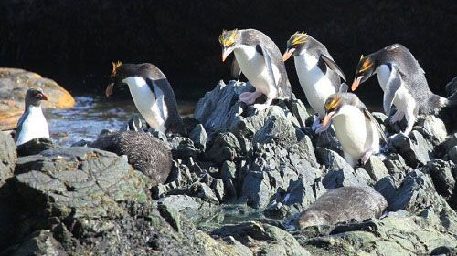
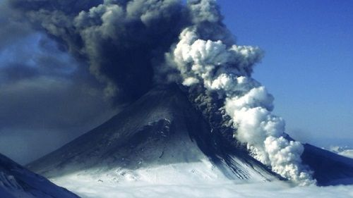
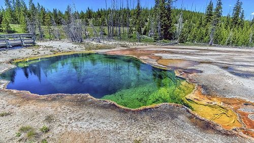
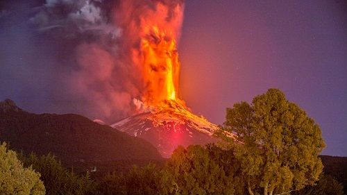
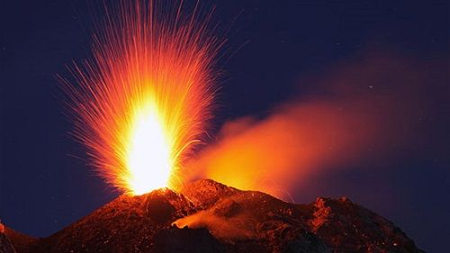

На нашем сайте подобраны наиболее интересные и опасные вулканы со всего мира.
Вулканы разделены по континентам и странам. Подобрать вулкан для рабочего стола можно в разделе
Фотографии. В разделе Новости самые последние
события из мира вулканов.
Вулкан Карри, взорвавшийся на маленьком острове, может погубить колонию пингвинов

На маленьком субантарктическом острове Британских заморских территорий взорвался вулкан Карри,
угрожающий одной из крупнейших колоний пингвинов, сообщают Gismeteo.Новости.
По мнению британских ученых, вулканическое извержение пагубно отразится на 1,2 млн. антарктических
пингвинах и 200 тысяч золотоволосых пингвинах.
Здесь находится крупнейшая в мире колония пингвинов. Дрейфующие вулканический пепел и дым серьезно
могут сказаться на их судьбе.
Известно, что вулкан Карри активизировался в марте и до сих пор выбрасывает колонны пепла и дыма.
Фотографии удается сделать со спутников, а также рыбакам.
Остров, на котором расположен вулкан очень удаленный. Эксперты и Антарктического управления Британии
отмечают, что для оценки пагубного влияния вулкана нужна экспедиция. Но осуществить эту возможность
можно либо в декабре 2016 года, либо январе 2017 года.Риск для пингвинов просто катастрофический,
так как они могут быть заживо в пепле или пострадают от сложностей с дыханием.Показания спутников
постоянно фиксируют дымовые струи, которые выплевывает вулкан. Кстати, это первое извержение вулкана
за все время его наблюдения.
На Аляске ожидается извержение вулканов Павлова и Кливленд

Геологами и Вулканической обсерватории Аляски ожидается скорое извержение двух крупнейших вулканов –
Павлова и Кливленд, сообщают Gismeteo.Новости..
Оба вулкана находятся в западной части полуострова. Наблюдается рост температуры в окрестностях
вулканов, что означает скопление расплавленных пород и газов в их магматических камерах. Наземные
станции слежения фиксировали слабую сейсмоактивность в районе вулкана Павлова.
Вулкан Павлова – один из самых беспокойных на земле. В этом году он уже дважды просыпался, а за
последние четыре десятилетия активизировался свыше 40 раз. По мнению специалистов, извержение этого
вулкана ожидает особенно внимательно, так как для него характерен внезапный тип извержения..
При извержении в марте вулкан выбросил густое пепловое облако. Как раз пролетающему над ним
пассажирскому самолету пришлось его преодолевать. В данный момент вулканам Павлова и Кливленд
присвоен «желтый» код опасности. Согласно прогнозам, при случившихся извержениях пепел направится в
сторону Берингового моря, Чукотки и Камчатки. Скорее всего пепел утонет в море, не причинив вреда
никому.
Супервулкан Йеллоустоун находится на грани извержения и грозит уничтожить Америку

Как отмечают вулканологи, что увеличивающееся число землетрясений – это опасный признак, который может
предвещать более серьезный катаклизм, сообщает SakhaPress.ru.
Так, учеными зафиксирована сейсмическая активность на северо-западной части Йеллоустона, где вулкан
проявил свой характер – за неделю произошло более 30 подземных толчков. А за месяц произошло свыше
130 толчков. .
Зафиксированная магнитуда у большинства землетрясений относительно небольшая, но случались и более
мощные толчки, что является существенным для данного района. Например, 20 июня произошло
землетрясение 3,4 балла по шкале Рихтера, 21 июня отмечались толчки в 3 балла.
По версии ученых перед извержением вулканы затихают

Ученые из Оксфордского университета обнаружили, что предшествием извержения вулканов являются периоды,
когда снижается их сейсмическая активность, сообщает Planet Today..
Уже непосредственно перед извержением начинают заметно проявляться такие признаки как повышение
сейсмической активности, появляется дым и иногда деформирование близлежащей почвы. Предсказание этих
признаков ранее не удавалось.
Сейчас ученым удалось выяснить, что мощность извержения непосредственно связана с продолжительностью
снижения вулканической активности. Доказательства тому получены при наблюдении в 2011 году за
стратовулканом Телика, находящимся в Никарагуа.
Во время наблюдений случилось 50 извержений, из которых 35 произошли после периодов затишья, которые
длились 30 минут и более. У 13 извержений период затишья составлял 5 минут. И только 2 извержения
оказались совершенно внезапными.Свое открытие ученые сравнивают с происходящим перед грозой, когда
все становится спокойным. Это своего рода ключ к спасению жизни людей и животных, находящихся
непосредственно в зоне вулканического извержения.
К чему приведет извержение сразу всех активных вулканов на Земле?

Конечно, ничего хорошего не следует ожидать, если вдруг взорвутся все активные вулканы на нашей
планете, сообщают Gismeteo.Новости.
На Земле существует 1500 активных вулканов. За последние 10 тысяч лет извержение каждого из них
происходило хотя бы один раз. Кроме этого, происходило извержение находящихся на дне океана 500
вулканов, их взрывы происходили за известный исторический период планеты.
Извержения вулканов не одинаковы и подразделяются на типы: эффузивные, когда происходит выброс лавы и
большое количество газа и эксплозивные, когда извергается пепел и газ. Здесь все зависит от вязкости
магмы. Если вязкость магмы очень высокая, то газ с большим трудом выбирается наружу, поэтому высока
вероятность эксплозивного характера.
Так что же произойдет, если вместе начнут извергаться все 1500 активных вулканов?
Люди, живущие непосредственно около вулканов пострадают первыми. Невероятная опасность будет исходить
от раскаленных потоков магмы, их температура достигнет 1000 градусов, а скорость будет достигать
724 км/ч. Естественно от них невозможно будет не убежать, не уехать. Еще одну опасность будут
представлять выбросы пепла, распространяющиеся на тысячи километров. Огромный вред он нанесет всем
видам двигателей, работе коммуникаций, здания под его тяжестью могут обрушиться. Огромные проблемы
возникнут с легкими при его вдыхании, нарушится иммунная система.
Но самую страшную опасность представляет изменения климата Земли на долгое время. Произойдет понижение
температуры из-за огромного количество пепла, попавшего в атмосферу. Может наступить ледниковый период.
В дальнейшем может произойти обратный эффект – поднятие температуры земли. Выброшенный вулканами
углекислый газ за сотни лет прогреет нашу землю.
Кстати, сейчас человечество производит СО2 в 50-100 раз, чем выбрасывают вулканы.